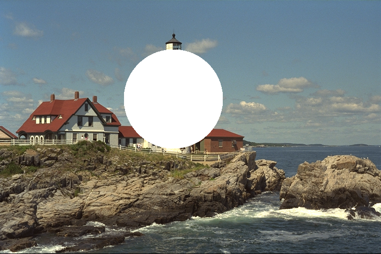
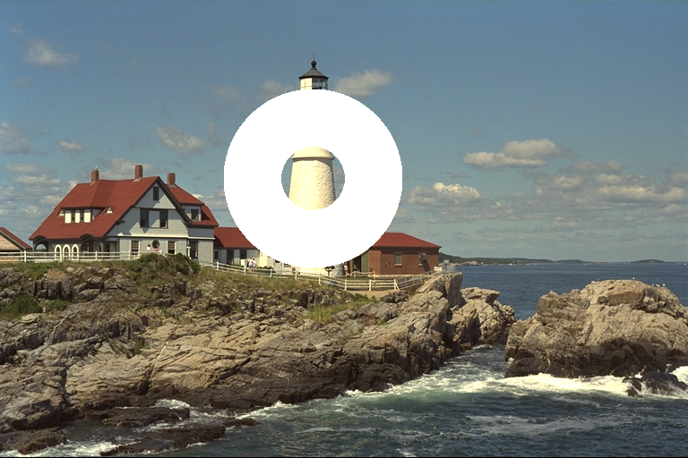
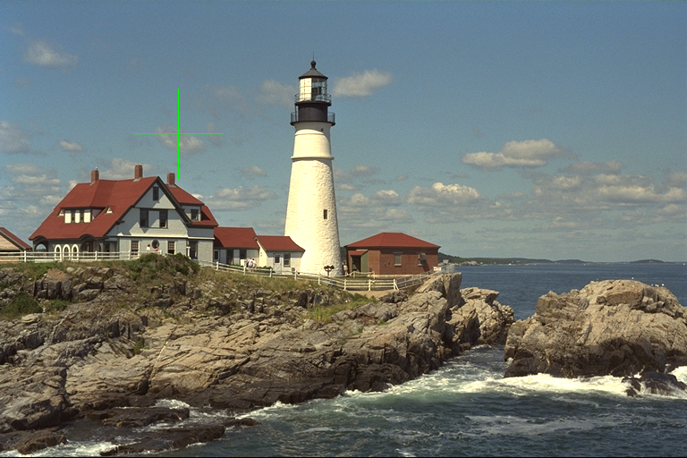
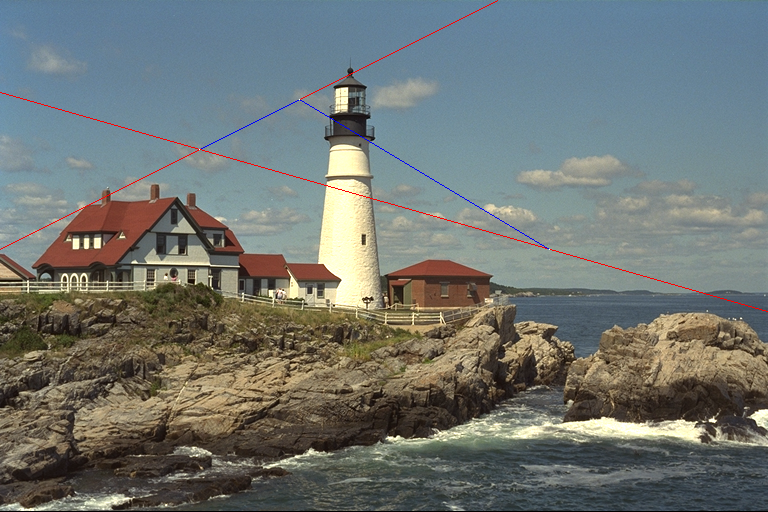

ImageDraw.jl
A drawing package for JuliaImages
Introduction
ImageDraw supports basic drawing on Images. You can draw points, lines, circles, ellipse and paths.
Basic usage
Let's start with a drawing a circle
using Images, TestImages, ImageDraw
img = testimage("lighthouse")
draw!(img, Ellipse(CirclePointRadius(350,200,100))) Downloading artifact: images
Drawing a circle with a thickness
img = testimage("lighthouse")
# With keyword argument fill = false, circle with given thickness is computed
draw!(img, Ellipse(CirclePointRadius(350, 200, 100; thickness = 75, fill = false)))
Drawing a Rectangle.
img = testimage("lighthouse")
img_example_stage1 = draw!(img, Polygon(RectanglePoints(Point(10, 10), Point(100, 100))), RGB{N0f8}(1))
img_example_stage2 = draw!(img_example_stage1, Polygon(RectanglePoints(CartesianIndex(110, 10), CartesianIndex(200, 200))), RGB{N0f8}(1))
img_example_stage3 = draw!(img_example_stage2, Polygon(RectanglePoints(220, 10, 300, 300)), RGB{N0f8}(1))Drawing a Cross.
img = testimage("lighthouse")
draw!(img, Cross(Point(200,150), 50), RGB{N0f8}(0,1,0))
Drawing Lines Segment and Point.
img = testimage("lighthouse")
p1 = Point(200,150)
p2 = Point(300,100)
p3 = Point(550,250)
draw!(img, LineTwoPoints(p1,p2), RGB{N0f8}(1,0,0))
draw!(img, LineSegment(p1,p2), RGB{N0f8}(0,0,1))
draw!(img, LineTwoPoints(p1,p3), RGB{N0f8}(1,0,0))
draw!(img, LineSegment(p2,p3), RGB{N0f8}(0,0,1))
for p in (p1,p2,p3)
draw!(img, p, RGB{N0f8}(1))
end